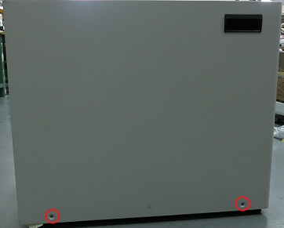
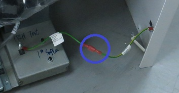
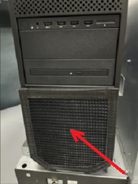

Follow this procedure to clean or replace the Global Operator Cabinet (GOC) dust filter.
Procedure
- Make sure that you have read and understood the electrical safety requirements before starting this procedure. See Electrical Safety.
- Shut down and power off the host computer. See Shutting down the host computer.
- Loosen the bracket screws on the PC rear panel and remove the bracket.
Disregard and remove any warranty void seals on the rear PC panel.
- Remove the two screws that secure the left side panel of the GOC.
Figure 1. GOC left side panel
Note The side panel has a short ground lead connecting it to the main chassis. When removing the side panel, do not strain this ground lead.
- Disconnect the short ground lead that connects the side panel to the GOC main chassis at the center of the lead.
Figure 2. Left side panel ground lead
- Remove the left side panel and put it in a safe place.
- Remove the dust filter.
Figure 3. Dust filter removal (Dell T5820)
| 1 | Velcro strip |
| 2 | Dust filter |
Figure 4. Dust filter removal (HP Z4G5)
- Clean the dust filter and reinstall it.
- If replacing the computer, remove the Velcro strips from the old computer and install them on the new computer.
- If the old filter or Velcro strips are not reusable, install a new set.
- Reconnect the ground cable and reinstall the GOC left side panel.
Finalization
- Start up the host computer/system. See Starting up the host computer
.
- Do a check scan. See Doing a check scan.